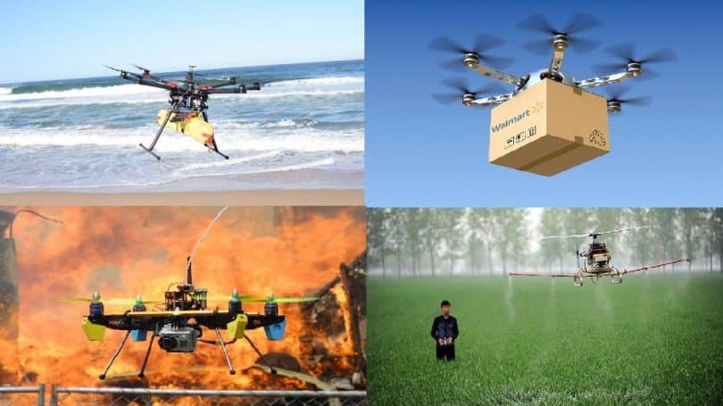

WHY ARE WE PROMOTING DRONE TECHNOLOGY? These mini self flying robots are becoming popular day by day. They are now an important asset in industries and government organizations. They managed to enter the circumstances and adapted them where many devices couldn't go and adapt themselves. The high advanced drones are more capable of doing more of the difficult work. They can also be used for deliveries during the times of traffic on the roads and even save a life in rescue missions. The motive if this website is to create awareness about drones and its advancements and to make the best use of the outputs in terms of DRONE TECHNOLOGY.
